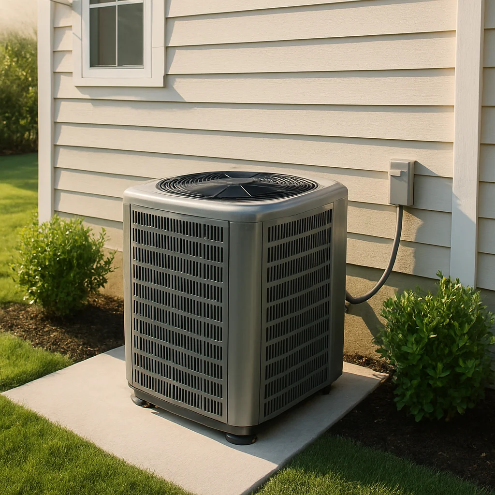
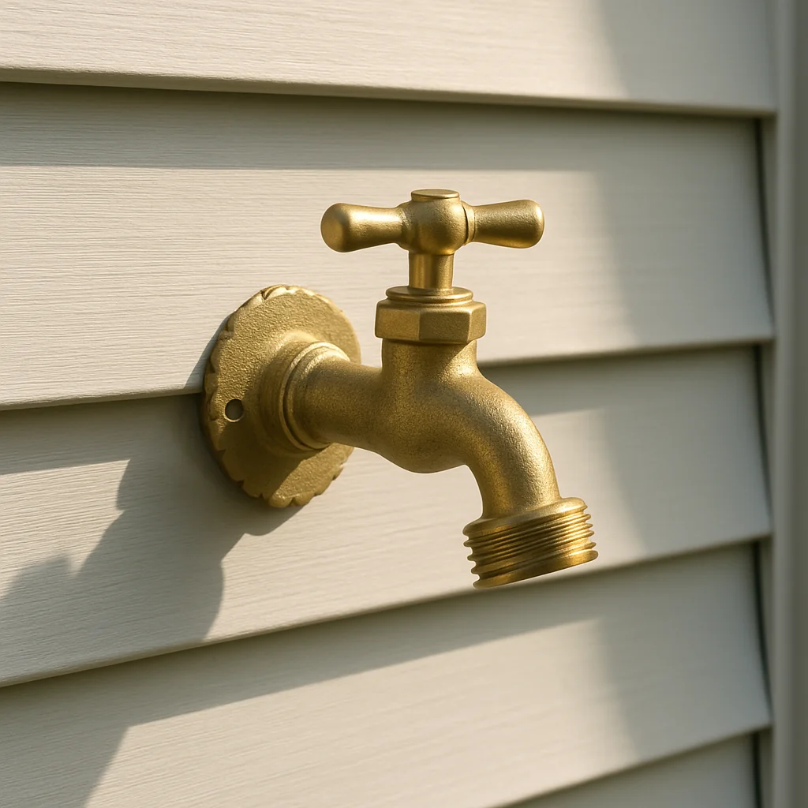
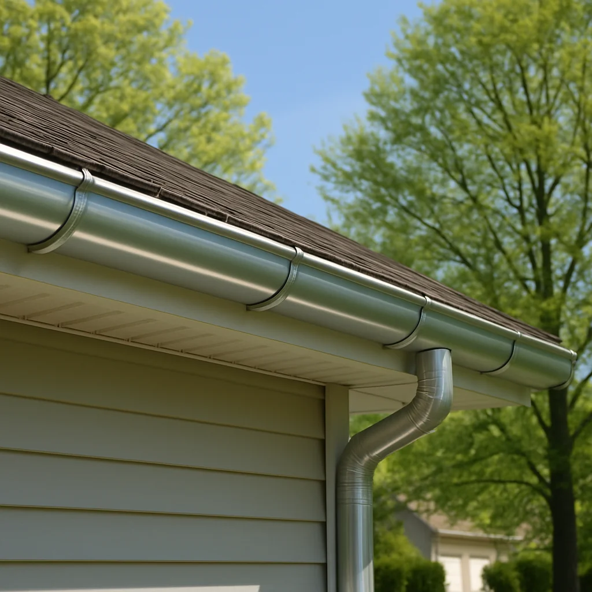
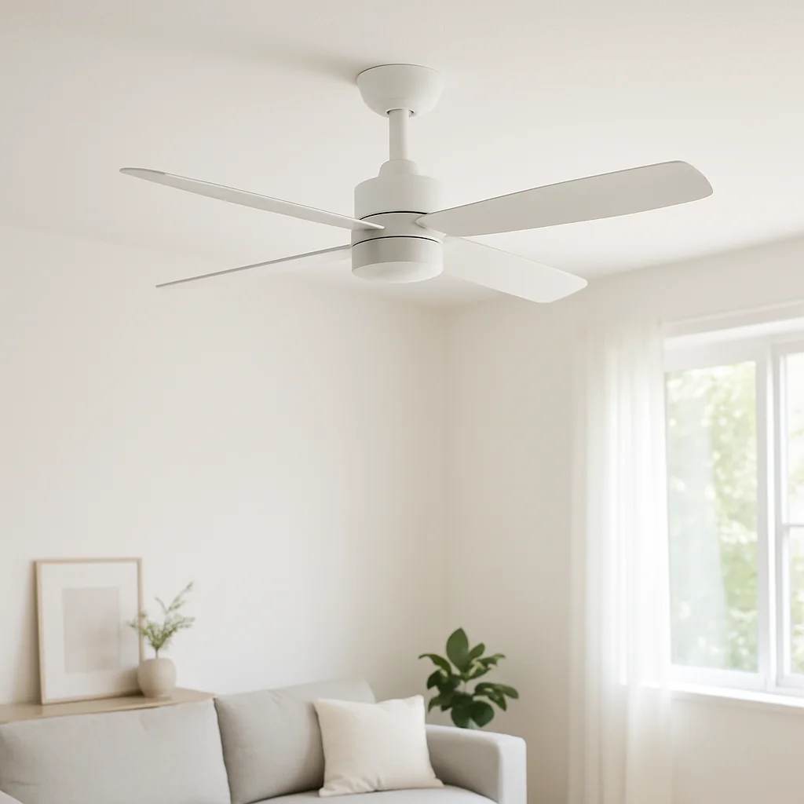

May checklist: 6 things to handle now before the first 90° week hits
I'm Fixa, and I've watched enough late-May weeks turn into "why didn't I check this last weekend?" panic to know the pattern. The first real heat wave doesn't ease in — it lands. Tuesday you're cracking a window; by Thursday the AC's running ten hours straight. Six things I'd handle this week. None take long. All are cheaper now than in July.
1. Give the AC a 10-minute test run

Pick a mild afternoon. Set the thermostat to Cool, drop it 5°F below room temperature, let it run fifteen minutes. That's the test.
While it runs, listen. A healthy AC makes one steady sound: a low fan whoosh outside, a softer one at the vents. What you don't want is grinding, hissing, a metallic rattle, or short-cycling — kicks on, runs ninety seconds, shuts off, repeats. After ten minutes the vent air should feel noticeably cooler than the room, and warm air should blast up out of the top of the outside condenser.
DIY fixes: swap the air filter if it's been more than three months, hose off the outdoor condenser fins (power off first, gentle spray), and clear two feet around the unit. Hissing, ice on the copper line, or vent air still room-temp after fifteen minutes is refrigerant or compressor territory. Shut it off — running an undercharged AC bakes the compressor, the most expensive repair this machine has. Call a pro now, before the heat-wave queue triples and prices follow it.
2. Walk every outdoor faucet

Water expands about 9% when it freezes. Every outdoor faucet just spent winter under pressure it wasn't designed for, and the cracks don't always show until you turn the water back on.
Pull off any hose left attached over winter — a hose left on traps water inside the bib, and it's the most common cause of a hidden crack. Turn the faucet fully on, press your thumb hard over the spout. If pressure drops or you feel water pushing back, water is escaping inside the wall. Walk to the basement or crawl space directly behind that faucet and look for fresh stains on the ceiling, joists, or studs. On brick homes, check the weep holes below the bib for drips.
A slow drip at the handle is usually a worn washer or O-ring — twenty minutes and a $3 part. Water inside the wall or running down a basement joist means the bib is cracked behind the siding. Shut the indoor supply valve and get a plumber on it before you're scheduling around a wet drywall job.
3. Clear the gutters before the first thunderstorm

Spring gutters carry the worst load of the year — leftover leaves, twigs, roof-shingle granules sloughed off during freeze-thaw, helicopter seeds, the occasional tennis ball. A clogged gutter doesn't fail dramatically. It overflows quietly down the side of the house and soaks the fascia, and you find out in August when a brown stain shows up on a bedroom ceiling.
Single-story house, comfortable on a ladder? Saturday morning. Wear gloves, scoop into a bucket, run a garden hose down the gutter from the high end. Water should come out each downspout in a strong, steady stream. A weak trickle means a clog farther down — tap the downspout and listen, or feed the hose in from the top and crank pressure.
Two stories, steep roof, or sagging gutters pulling away from the fascia? Hire it out. Pro gutter cleaning typically runs $175 to $285, and the pro flags winter damage you'd miss from the ground. Booking now beats booking the week after the first big storm.
4. Wake up the irrigation system the right way
May into early June is the window to bring the sprinkler system up after winter. Skip it and you find the broken heads in July, after a brown ring shows up where one zone used to throw water.
Open the main valve slowly, not in one yank. Run every zone from the controller, one at a time, and walk it while it sprays. Four things to watch for: a head that won't pop up, a head spraying sideways into the driveway or siding instead of the lawn, a fine mist instead of a stream (cracked nozzle, usually a lawnmower clip), and a soft squishy patch while the rest of the zone runs dry. That last one is a hidden underground leak, and a single broken line can waste over 6,000 gallons a month before you catch it on the bill.
Check the backflow preventer too — the brass assembly above ground near where the line leaves the house. It shouldn't be leaking, frost-cracked, or weeping at the test ports. Many states require an annual certified backflow test; your water utility will tell you if yours is one.
A clogged nozzle or a tilted head you can twist back is a Saturday fix. Anything underground, no pressure at a whole zone, a controller that won't trigger valves, or a backflow needing certification — that's a pro. A standard spring startup runs $80 to $150 and catches leaks you can't see from the surface.
5. Walk the deck before the first cookout
Decks age two ways: down (rot at every joint that holds moisture) and out (rails loosen, fasteners back out, sun bakes the boards). Both are easier to spot on a dry afternoon than during a party with twelve people standing on them.
Grab a screwdriver and walk every plank. Press the tip into any spot that looks dark, soft, or feathered — especially near the ledger board where the deck meets the house, around post bases, and anywhere water collects. Healthy wood pushes back. Rotted wood lets the screwdriver sink in like cheese. Then shake every railing section hard. A railing should feel rock-solid. Any wobble means a loose post, fastener, or connection rotted out underneath. Crouch and look at the ledger board from below if you can — that's the one that matters most and fails worst.
A few loose fasteners or one soft board is a Saturday repair. Widespread soft spots, a wobbly railing, a sagging ledger, or rust on the joist hangers underneath is when the deck crosses from maintenance into safety. Get a pro on it before the season's first big gathering, not after.
6. The five-minute round: fan reverse, smoke detectors, filter

Three small jobs that pay back all summer.
Flip every ceiling fan to counterclockwise as you look up — there's a little switch on the motor housing. Counterclockwise pushes a column of air straight down, which is what you want in summer. It'll let you nudge the thermostat up a degree and not notice. Wipe the blades while you're up there — whatever's on top is about to be on your couch.
Test every smoke and CO detector — hold the button until it chirps, swap the batteries either way. One thing most people skip: check the manufacture date on the back. NFPA says smoke detectors get replaced at ten years, period. A fresh battery in a twelve-year-old detector is false confidence. If the date's faded or missing, assume it's old and swap the unit.
Last one: change the HVAC filter if you haven't this season. A clogged filter is the most common reason an AC underperforms on a hot day, and a new one costs less than coffee.
---
That's the list. None of it's glamorous, but you'll feel every one the first week the highs hit 90. If any check turns up something bigger than a Saturday fix, get it scoped now — pros have time in May. They won't in July. I'll find you the right one when you're ready.